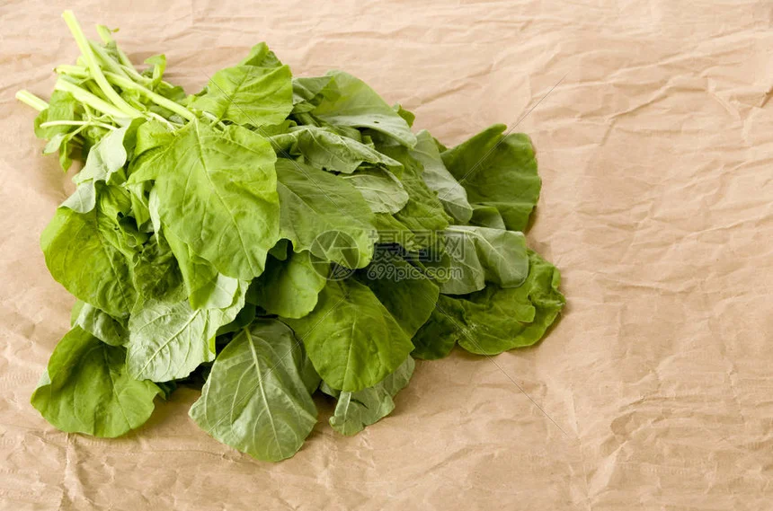
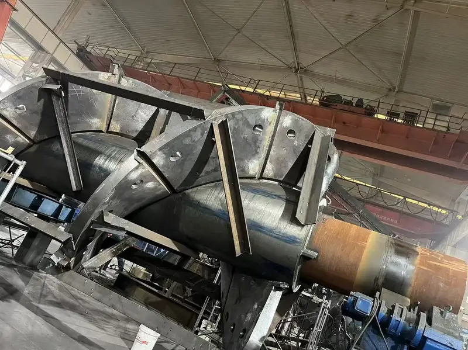
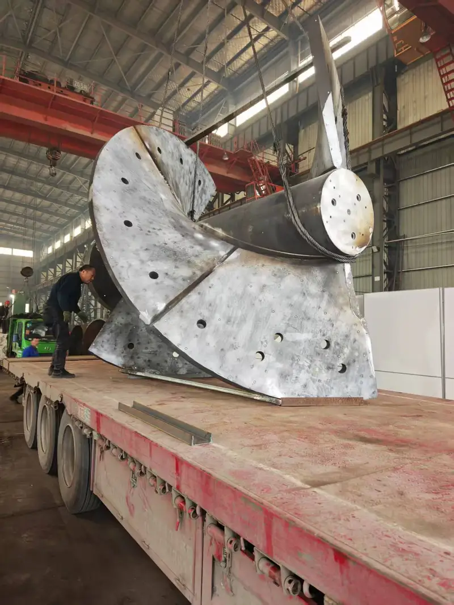
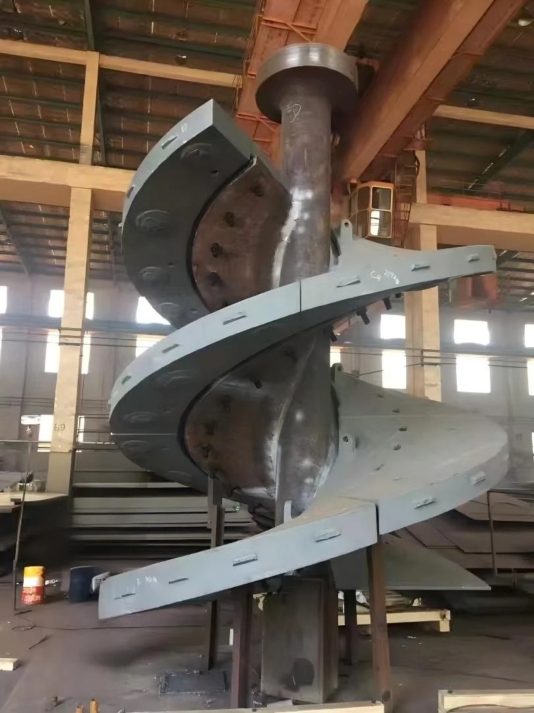
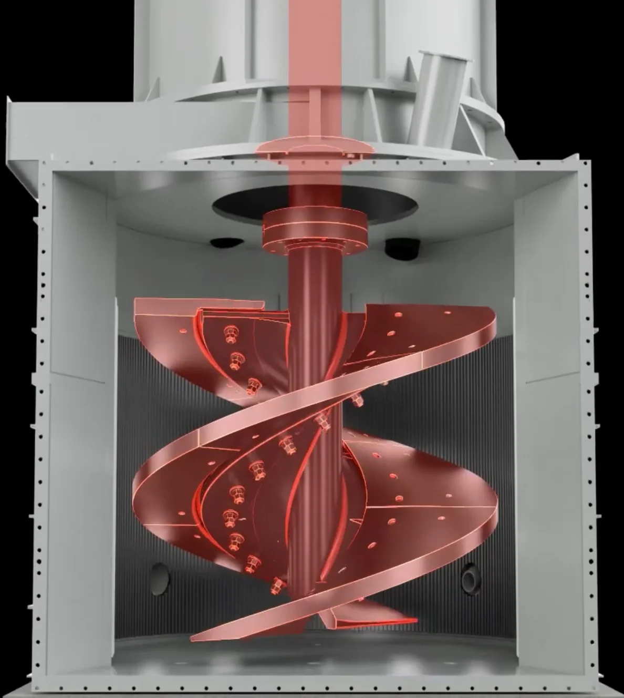

Overview
Technical Specs
耐磨件
美卓
Vertimill塔磨机
美卓Vertimill是垂直搅拌研磨技术的行业领导者。与传统球磨机相比节能高达40%，非常适合再磨、二段磨和细磨应用。螺旋搅拌器提供高效研磨，介质消耗最低。安然科技提供Cr26高铬铸铁和陶瓷复合选项的Vertimill衬板和螺旋段。
Typical Applications
Factory
生产实拍 — 安然科技车间

.webp)
.webp)




.webp)
.webp)
.webp)
.webp)
Technical Data
Vertimill塔磨机 — 型号
| 型号 | 耐磨件 |
|---|---|
| 型号 | VTM-10 to VTM-4500 |
| 耐磨件 | Screw liners, Shell liners, Screens |
耐磨件
采用优质耐磨合金制造，包括高锰钢、铬钼合金钢和高铬铸铁。
耐磨件
Vertimill塔磨机 耐磨件
型号
VTM-10 to VTM-4500
耐磨件
螺旋衬板、筒体衬板、筛网
螺旋衬板/搅拌臂衬板
保护螺旋/搅拌组件免受研磨介质和矿石磨损；螺旋型面确保高效矿物提升和混合
Cr26GB KmTBCr26 / 高铬铸铁Cr26
硬度HRC 58-65
冲击韧性AKV 5-8J
抗拉强度≥ 500 MPa
屈服强度—
| Grade | C | Si | Mn | Cr | Mo | Ni |
|---|---|---|---|---|---|---|
| Cr26 | 2.0-3.3 | ≤1.0 | 0.5-1.5 | 23.0-30.0 | 1.0-3.0 | ≤1.5 |
M7C3碳化物网络提供卓越耐磨性；纯磨粒磨损下寿命比锰钢高3-5倍；适用于立磨辊套和VSI转子
筒体衬板/槽体衬板
保护研磨槽体免受介质冲击和矿浆磨损；橡胶背衬选项可降噪
Cr26GB KmTBCr26 / 高铬铸铁Cr26
硬度HRC 58-65
冲击韧性AKV 5-8J
抗拉强度≥ 500 MPa
屈服强度—
| Grade | C | Si | Mn | Cr | Mo | Ni |
|---|---|---|---|---|---|---|
| Cr26 | 2.0-3.3 | ≤1.0 | 0.5-1.5 | 23.0-30.0 | 1.0-3.0 | ≤1.5 |
M7C3碳化物网络提供卓越耐磨性；纯磨粒磨损下寿命比锰钢高3-5倍；适用于立磨辊套和VSI转子
Natural Rubber / Polyurethane天然橡胶/聚氨酯弹性体
硬度Shore A 50-75
冲击韧性Elongation ≥ 400%
抗拉强度≥ 20 MPa
屈服强度—
| Grade | Base | Hardness | Tensile | Abrasion |
|---|---|---|---|---|
| Natural Rubber / Polyurethane | NR/SBR or PU | Shore A 50-75 | ≥ 20 MPa | DIN ≤ 150 mm³ |
卓越的耐腐蚀和抗汽蚀性能；降噪50-70%；适用于酸性/腐蚀环境中的渣浆泵衬里和浮选机叶轮
为什么选择安然科技
- 精密铸造Cr26衬板，优化螺旋角适用于VTM-10至VTM-4500；确保稳定研磨效率
- 橡胶背衬筒体衬板选项降噪60%，在细磨应用中延长衬板寿命
- 全VTM系列覆盖：VTM-10至VTM-4500